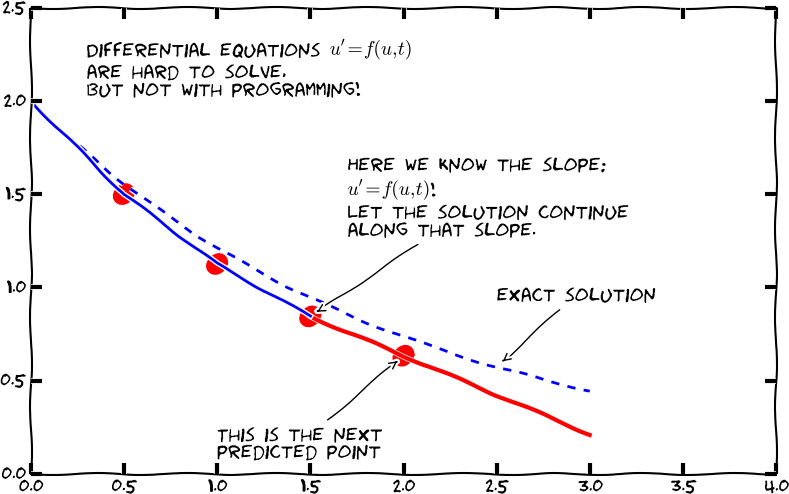
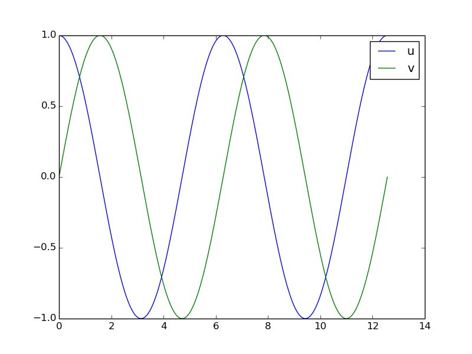
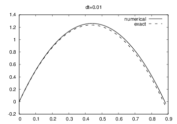
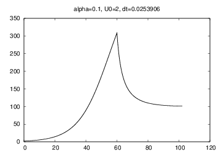

$$ \begin{align*} {\color{red}u'(t)} &= \alpha {\color{red}u(t)}(1 - R^{-1}{\color{red}u(t)})\\ {\color{red}u(0)} &= U_0 \end{align*} $$
$$ \begin{align*} u'&=\alpha u\quad\hbox{exponential growth}\\ u'&=\alpha u\left( 1-\frac{u}{R}\right)\quad\hbox{logistic growth}\\ u' + b|u|u &= g\quad\hbox{falling body in fluid} \end{align*} $$
The three ODEs on the last slide correspond to $$ \begin{align*} f(u,t) &= \alpha u,\quad\hbox{exponential growth}\\ f(u,t) &= \alpha u\left( 1-\frac{u}{R}\right),\quad\hbox{logistic growth}\\ f(u,t) &= -b|u|u + g,\quad\hbox{body in fluid} \end{align*} $$
Our task: write functions and classes that take \( f \) as input and produce \( u \) as output
Given an ODE, $$ \sqrt{u}u' - \alpha(t) u^{3/2}(1-\frac{u}{R(t)}) = 0,$$ what is the \( f(u,t) \)?
The target form is \( u'=f(u,t) \), so we need to isolate \( u' \) on the left-hand side: $$ u' = \underbrace{\alpha(t) u(1-\frac{u}{R(t)})}_{f(u,t)} $$
Assume we have computed \( u \) at discrete time points \( t_0,t_1,\ldots,t_k \). At \( t_k \) we have the ODE $$ u'(t_k) = f(u(t_k),t_k) $$
Approximate \( u'(t_k) \) by a forward finite difference, $$ u'(t_k)\approx \frac{u(t_{k+1})-u(t_k)}{\Delta t}$$
Insert in the ODE at \( t=t_k \): $$ \frac{u(t_{k+1})-u(t_k)}{\Delta t} = f(u(t_k),t_k) $$
Terms with \( u(t_k) \) are known, and this is an algebraic (difference) equation for \( u(t_{k+1}) \)


Solving with respect to \( u(t_{k+1}) \) $$ u(t_{k+1}) = u(t_k) + \Delta t f(u(t_k), t_k)$$
This is a very simple formula that we can use repeatedly for \( u(t_1) \), \( u(t_2) \), \( u(t_3) \) and so forth.
Let \( u_k \) denote the numerical approximation to the exact solution \( u(t) \) at \( t=t_k \). $$ u_{k+1} = u_k + \Delta t f(u_k,t_k)$$
This is an ordinary difference equation we can solve!

$$ u' = u,\quad t\in (0,T] $$
Solve for \( u \) at \( t=t_k=k\Delta t \), \( k=0,1,2,\ldots,t_n \), \( t_0=0 \), \( t_n=T \)
$$ u_{k+1} = u_k + \Delta t\, f(u_k,t_k)$$
What is \( f \)? \( f(u,t)=u \) $$ u_{k+1} = u_k + \Delta t f(u_k,t_k) = u_k + \Delta t u_k = (1+\Delta t)u_k$$
First step: $$ u_1 = (1+\Delta t) u_0$$ but what is \( u_0 \)?
Any ODE \( u'=f(u,t) \) must have an initial condition \( u(0)=U_0 \), with known \( U_0 \), otherwise we cannot start the method!
In mathematics: \( u(0)=U_0 \) must be specified to get a unique solution.
$$ u'=u $$ Solution: \( u=Ce^t \) for any constant \( C \). Say \( u(0)=U_0 \): \( u=U_0e^t \).
Say \( U_0=2 \): $$ \begin{align*} u_1 &= (1+\Delta t) u_0 = (1+\Delta t) U_0 = (1+\Delta t)2 \\ u_2 &= (1+\Delta t) u_1 = (1+\Delta t) (1+\Delta t)2 = 2(1+\Delta t)^2\\ u_3 &= (1+\Delta t) u_2 = (1+\Delta t) 2(1+\Delta t)^2 = 2(1+\Delta t)^3\\ u_4 &= (1+\Delta t) u_3 = (1+\Delta t) 2(1+\Delta t)^3 = 2(1+\Delta t)^4\\ u_5 &= (1+\Delta t) u_4 = (1+\Delta t) 2(1+\Delta t)^4 = 2(1+\Delta t)^5\\ \vdots &= \vdots\\ u_k &= 2(1+\Delta t)^k \end{align*} $$ Actually, we found a formula for \( u_k \)! No need to program...
Given any \( U_0 \): $$ \begin{align*} u_1 &= u_0 + \Delta t f(u_0, t_0)\\ u_2 &= u_1 + \Delta t f(u_1, t_1)\\ u_3 &= u_2 + \Delta t f(u_2, t_2)\\ u_4 &= u_3 + \Delta t f(u_3, t_3)\\ &\vdots \end{align*} $$ No general formula in this case...
When hand calculations get boring, let's program!
Given \( \Delta t \) (dt) and \( n \)
t and u of length \( n+1 \)u[0] = \( U_0 \), t[0]=0t[k+1] = t[k] + dtu[k+1] = (1 + dt)*u[k]
import numpy as np
import sys
dt = float(sys.argv[1])
U0 = 1
T = 4
n = int(T/dt)
t = np.zeros(n+1)
u = np.zeros(n+1)
t[0] = 0
u[0] = U0
for k in range(n):
t[k+1] = t[k] + dt
u[k+1] = (1 + dt)*u[k]
# plot u against t
\( \Delta t = 0.4 \) and \( \Delta t=0.2 \):

Given \( \Delta t \) (dt) and \( n \)
t and u of length \( n+1 \)u to hold \( u_k \) andu[0] = \( U_0 \), t[0]=0u[k+1] = u[k] + dt*f(u[k], t[k]) (the only change!)t[k+1] = t[k] + dt
def ForwardEuler(f, U0, T, n):
"""Solve u'=f(u,t), u(0)=U0, with n steps until t=T."""
import numpy as np
t = np.zeros(n+1)
u = np.zeros(n+1) # u[k] is the solution at time t[k]
u[0] = U0
t[0] = 0
dt = T/float(n)
for k in range(n):
t[k+1] = t[k] + dt
u[k+1] = u[k] + dt*f(u[k], t[k])
return u, t
This simple function can solve any ODE (!)
Solve \( u'=u \), \( u(0)=1 \), for \( t\in [0,4] \),
with \( \Delta t = 0.4 \)
Exact solution: \( u(t)=e^t \).
def f(u, t):
return u
U0 = 1
T = 3
n = 30
u, t = ForwardEuler(f, U0, T, n)
from scitools.std import plot, exp
u_exact = exp(t)
plot(t, u, 'r-', t, u_exact, 'b-',
xlabel='t', ylabel='u', legend=('numerical', 'exact'),
title="Solution of the ODE u'=u, u(0)=1")
f(u, t)u, t = ForwardEuler(f, U0, T, n)plot(t, u)
The Forward Euler method may give very inaccurate solutions if \( \Delta t \) is not sufficiently small. For some problems (like \( u''+u=0 \)) other methods should be used.
method = ForwardEuler(f, dt)
method.set_initial_condition(U0, t0)
u, t = method.solve(T)
plot(t, u)
ForwardEuler function into four methods:__init__)set_initial_condition for \( u(0)=U_0 \)solve for running the numerical time steppingadvance for isolating the numerical updating formula advance method,
the rest is the same)
import numpy as np
class ForwardEuler_v1:
def __init__(self, f, dt):
self.f, self.dt = f, dt
def set_initial_condition(self, U0):
self.U0 = float(U0)
class ForwardEuler_v1:
...
def solve(self, T):
"""Compute solution for 0 <= t <= T."""
n = int(round(T/self.dt)) # no of intervals
self.u = np.zeros(n+1)
self.t = np.zeros(n+1)
self.u[0] = float(self.U0)
self.t[0] = float(0)
for k in range(self.n):
self.k = k
self.t[k+1] = self.t[k] + self.dt
self.u[k+1] = self.advance()
return self.u, self.t
def advance(self):
"""Advance the solution one time step."""
# Create local variables to get rid of "self." in
# the numerical formula
u, dt, f, k, t = self.u, self.dt, self.f, self.k, self.t
unew = u[k] + dt*f(u[k], t[k])
return unew
# Idea: drop dt in the constructor.
# Let the user provide all time points (in solve).
class ForwardEuler:
def __init__(self, f):
# test that f is a function
if not callable(f):
raise TypeError('f is %s, not a function' % type(f))
self.f = f
def set_initial_condition(self, U0):
self.U0 = float(U0)
def solve(self, time_points):
...
class ForwardEuler:
...
def solve(self, time_points):
"""Compute u for t values in time_points list."""
self.t = np.asarray(time_points)
self.u = np.zeros(len(time_points))
self.u[0] = self.U0
for k in range(len(self.t)-1):
self.k = k
self.u[k+1] = self.advance()
return self.u, self.t
def advance(self):
"""Advance the solution one time step."""
u, f, k, t = self.u, self.f, self.k, self.t
dt = t[k+1] - t[k]
unew = u[k] + dt*f(u[k], t[k])
return unew
Important result: the numerical method (and most others) will exactly reproduce \( u \) if it is linear in \( t \) (!): $$ \begin{align*} u(t) &= at+b = 0.2t + 3\\ h(t) &= u(t)\\ u'(t) &=0.2 + (u-h(t))^4,\quad u(0)=3,\quad t\in [0,3] \end{align*} $$ This \( u \) should be reproduced to machine precision for any \( \Delta t \).
def test_ForwardEuler_against_linear_solution():
def f(u, t):
return 0.2 + (u - h(t))**4
def h(t):
return 0.2*t + 3
solver = ForwardEuler(f)
solver.set_initial_condition(U0=3)
dt = 0.4; T = 3; n = int(round(float(T)/dt))
time_points = np.linspace(0, T, n+1)
u, t = solver.solve(time_points)
u_exact = h(t)
diff = np.abs(u_exact - u).max()
tol = 1E-14
success = diff < tol
assert success
$$ u^{\prime}(t)=\alpha u(t)\left( 1-\frac{u(t)}{R}\right),\quad u(0)=U_0,\quad t\in [0,40]$$
class Logistic:
def __init__(self, alpha, R, U0):
self.alpha, self.R, self.U0 = alpha, float(R), U0
def __call__(self, u, t): # f(u,t)
return self.alpha*u*(1 - u/self.R)
problem = Logistic(0.2, 1, 0.1)
time_points = np.linspace(0, 40, 401)
method = ForwardEuler(problem)
method.set_initial_condition(problem.U0)
u, t = method.solve(time_points)
$$ u_{k+1} = u_k + \Delta t\, f(u_k, t_k) $$
$$ u_{k+1} = u_k + {1\over 6}\left( K_1 + 2K_2 + 2K_3 + K_4\right)$$ $$ \begin{align*} K_1 &= \Delta t\,f(u_k, t_k)\\ K_2 &= \Delta t\,f(u_k + {1\over2}K_1, t_k + {1\over2}\Delta t)\\ K_3 &= \Delta t\,f(u_k + {1\over2}K_2, t_k + {1\over2}\Delta t)\\ K_4 &= \Delta t\,f(u_k + K3, t_k + \Delta t) \end{align*} $$
And lots of other methods! How to program a wide collection of methods? Use object-oriented programming!
ODESolveradvanceForwardEuler, just implement the specific numerical formula in advance
class ODESolver:
def __init__(self, f):
self.f = f
def advance(self):
"""Advance solution one time step."""
raise NotImplementedError # implement in subclass
def set_initial_condition(self, U0):
self.U0 = float(U0)
def solve(self, time_points):
self.t = np.asarray(time_points)
self.u = np.zeros(len(self.t))
# Assume that self.t[0] corresponds to self.U0
self.u[0] = self.U0
# Time loop
for k in range(n-1):
self.k = k
self.u[k+1] = self.advance()
return self.u, self.t
def advance(self):
raise NotImplemtedError # to be impl. in subclasses
class ForwardEuler(ODESolver):
def advance(self):
u, f, k, t = self.u, self.f, self.k, self.t
dt = t[k+1] - t[k]
unew = u[k] + dt*f(u[k], t)
return unew
from ODESolver import ForwardEuler
def test1(u, t):
return u
method = ForwardEuler(test1)
method.set_initial_condition(U0=1)
u, t = method.solve(time_points=np.linspace(0, 3, 31))
plot(t, u)
class RungeKutta4(ODESolver):
def advance(self):
u, f, k, t = self.u, self.f, self.k, self.t
dt = t[k+1] - t[k]
dt2 = dt/2.0
K1 = dt*f(u[k], t)
K2 = dt*f(u[k] + 0.5*K1, t + dt2)
K3 = dt*f(u[k] + 0.5*K2, t + dt2)
K4 = dt*f(u[k] + K3, t + dt)
unew = u[k] + (1/6.0)*(K1 + 2*K2 + 2*K3 + K4)
return unew
from ODESolver import RungeKutta4
def test1(u, t):
return u
method = RungeKutta4(test1)
method.set_initial_condition(U0=1)
u, t = method.solve(time_points=np.linspace(0, 3, 31))
plot(t, u)
solve(time_points, terminate)terminate(u, t, step_no) is called at every time step, is user-defined,
and returns True when the time stepping should be terminatedu[step_no] at time t[step_no]
def terminate(u, t, step_no):
eps = 1.0E-6 # small number
return abs(u[step_no,0]) < eps # close enough to zero?
$$ \begin{align*} u' &= v\\ v' &= -u\\ u(0) &= 1\\ v(0) &= 0 \end{align*} $$

Two ODEs with two unknowns \( u(t) \) and \( v(t) \): $$ \begin{align*} u'(t) &= v(t)\\ v'(t) &= -u(t) \end{align*} $$
Each unknown must have an initial condition, say $$ u(0)=0,\quad v(0)=1 $$
In this case, one can derive the exact solution to be $$ u(t)=\sin (t),\quad v(t)=\cos (t)$$
Systems of ODEs appear frequently in physics, biology, finance, ...
Model for spreading of a disease in a population: $$ \begin{align*} S' &= - \beta SI\\ I' &= \beta SI -\nu R\\ R' &= \nu I \end{align*} $$
Initial conditions: $$ \begin{align*} S(0) &= S_0\\ I(0) &= I_0\\ R(0) &= 0 \end{align*} $$
Second-order ordinary differential equation, for a spring-mass system (from Newton's second law): $$ mu'' + \beta u' + ku = 0,\quad u(0)=U_0,\ u'(0)=0$$
We can rewrite this as a system of two first-order equations, by introducing two new unknowns $$ u^{(0)}(t) \equiv u(t),\quad u^{(1)}(t) \equiv u'(t)$$
The first-order system is then $$ \begin{align*} {d\over dt} u^{(0)}(t) &= u^{(1)}(t)\\ {d\over dt} u^{(1)}(t) &= -m^{-1}\beta u^{(1)} - m^{-1}ku^{(0)} \end{align*} $$
Initial conditions: \( u^{(0)}(0) = U_0 \), \( u^{(1)}(0)=0 \)
General software for any vector/scalar ODE demands a general mathematical notation. We introduce \( n \) unknowns $$ u^{(0)}(t), u^{(1)}(t), \ldots, u^{(n-1)}(t) $$ in a system of \( n \) ODEs: $$ \begin{align*} {d\over dt}u^{(0)} &= f^{(0)}(u^{(0)}, u^{(1)}, \ldots, u^{(n-1)}, t)\\ {d\over dt}u^{(1)} &= f^{(1)}(u^{(0)}, u^{(1)}, \ldots, u^{(n-1)}, t)\\ \vdots &=& \vdots\\ {d\over dt}u^{(n-1)} &= f^{(n-1)}(u^{(0)}, u^{(1)}, \ldots, u^{(n-1)}, t) \end{align*} $$
We can collect the \( u^{(i)}(t) \) functions and right-hand side functions \( f^{(i)} \) in vectors: $$ u = (u^{(0)}, u^{(1)}, \ldots, u^{(n-1)})$$ $$ f = (f^{(0)}, f^{(1)}, \ldots, f^{(n-1)})$$
The first-order system can then be written $$ u' = f(u, t),\quad u(0) = U_0$$ where \( u \) and \( f \) are vectors and \( U_0 \) is a vector of initial conditions
Observe that the notation makes a scalar ODE and a system look the same, and we can easily make Python code that can handle both cases within the same lines of code (!)
In Python code:
unew = u[k] + dt*f(u[k], t)
where
u is a two-dim. array (u[k] is a row)f is a function returning an array
(all the right-hand sides \( f^{(0)},\ldots,f^{(n-1)} \))
f(u,t) returns an array. u 1-dim or 2-dim array
class ODESolver:
def __init__(self, f):
# Wrap user's f in a new function that always
# converts list/tuple to array (or let array be array)
self.f = lambda u, t: np.asarray(f(u, t), float)
def set_initial_condition(self, U0):
if isinstance(U0, (float,int)): # scalar ODE
self.neq = 1 # no of equations
U0 = float(U0)
else: # system of ODEs
U0 = np.asarray(U0)
self.neq = U0.size # no of equations
self.U0 = U0
class ODESolver:
...
def solve(self, time_points, terminate=None):
if terminate is None:
terminate = lambda u, t, step_no: False
self.t = np.asarray(time_points)
n = self.t.size
if self.neq == 1: # scalar ODEs
self.u = np.zeros(n)
else: # systems of ODEs
self.u = np.zeros((n,self.neq))
# Assume that self.t[0] corresponds to self.U0
self.u[0] = self.U0
# Time loop
for k in range(n-1):
self.k = k
self.u[k+1] = self.advance()
if terminate(self.u, self.t, self.k+1):
break # terminate loop over k
return self.u[:k+2], self.t[:k+2]
All subclasses from the scalar ODE works for systems as well
$$ mu'' + \beta u' + ku = 0,\quad u(0),\ u'(0)\hbox{ known}$$ $$ \begin{align*} u^{(0)} &= u,\quad u^{(1)} = u'\\ u(t) &= (u^{(0)}(t), u^{(1)}(t))\\ f(u,t)&=(u^{(1)}(t), -m^{-1}\beta u^{(1)} - m^{-1}ku^{(0)})\\ u'(t) &= f(u,t) \end{align*} $$
def myf(u, t):
# u is array with two components u[0] and u[1]:
return [u[1],
-beta*u[1]/m - k*u[0]/m]
class MyF:
def __init__(self, m, k, beta):
self.m, self.k, self.beta = m, k, beta
def __call__(self, u, t):
m, k, beta = self.m, self.k, self.beta
return [u[1], -beta*u[1]/m - k*u[0]/m]
from ODESolver import ForwardEuler
# initial condition:
U0 = [1.0, 0]
f = MyF(1.0, 1.0, 0.0) # u'' + u = 0 => u(t)=cos(t)
solver = ForwardEuler(f)
solver.set_initial_condition(U0)
T = 4*pi; dt = pi/20; n = int(round(T/dt))
time_points = np.linspace(0, T, n+1)
u, t = solver.solve(time_points)
# u is an array of [u0,u1] arrays, plot all u0 values:
u0_values = u[:,0]
u0_exact = cos(t)
plot(t, u0_values, 'r-', t, u0_exact, 'b-')
Newton's 2nd law for a ball's trajectory through air leads to $$ \begin{align*} {dx\over dt} &= v_x\\ {dv_x\over dt} &= 0\\ {dy\over dt} &= v_y\\ {dv_y\over dt} &= -g \end{align*} $$ Air resistance is neglected but can easily be added!
def f(u, t):
x, vx, y, vy = u
g = 9.81
return [vx, 0, vy, -g]
from ODESolver import ForwardEuler
# t=0: prescribe x, y, vx, vy
x = y = 0 # start at the origin
v0 = 5; theta = 80*pi/180 # velocity magnitude and angle
vx = v0*cos(theta)
vy = v0*sin(theta)
# Initial condition:
U0 = [x, vx, y, vy]
solver= ForwardEuler(f)
solver.set_initial_condition(u0)
time_points = np.linspace(0, 1.2, 101)
u, t = solver.solve(time_points)
# u is an array of [x,vx,y,vy] arrays, plot y vs x:
x = u[:,0]; y = u[:,2]
plot(x, y)
Comparison of exact and Forward Euler solutions

$$ u' = \alpha u(1 - u/{\color{red}R(t)}),\quad u(0)=U_0 $$ \( R \) is the maximum population size, which can vary with changes in the environment over time
class Problem:
def __init__(self, alpha, R, U0, T):
self.alpha, self.R, self.U0, self.T = alpha, R, U0, T
def __call__(self, u, t):
"""Return f(u, t)."""
return self.alpha*u*(1 - u/self.R(t))
def terminate(self, u, t, step_no):
"""Terminate when u is close to R."""
tol = self.R*0.01
return abs(u[step_no] - self.R) < tol
problem = Problem(alpha=0.1, R=500, U0=2, T=130)
class Solver:
def __init__(self, problem, dt,
method=ODESolver.ForwardEuler):
self.problem, self.dt = problem, dt
self.method = method
def solve(self):
solver = self.method(self.problem)
solver.set_initial_condition(self.problem.U0)
n = int(round(self.problem.T/self.dt))
t_points = np.linspace(0, self.problem.T, n+1)
self.u, self.t = solver.solve(t_points,
self.problem.terminate)
def plot(self):
plot(self.t, self.u)
problem = Problem(alpha=0.1, U0=2, T=130,
R=lambda t: 500 if t < 60 else 100)
solver = Solver(problem, dt=1.)
solver.solve()
solver.plot()
print 'max u:', solver.u.max()
